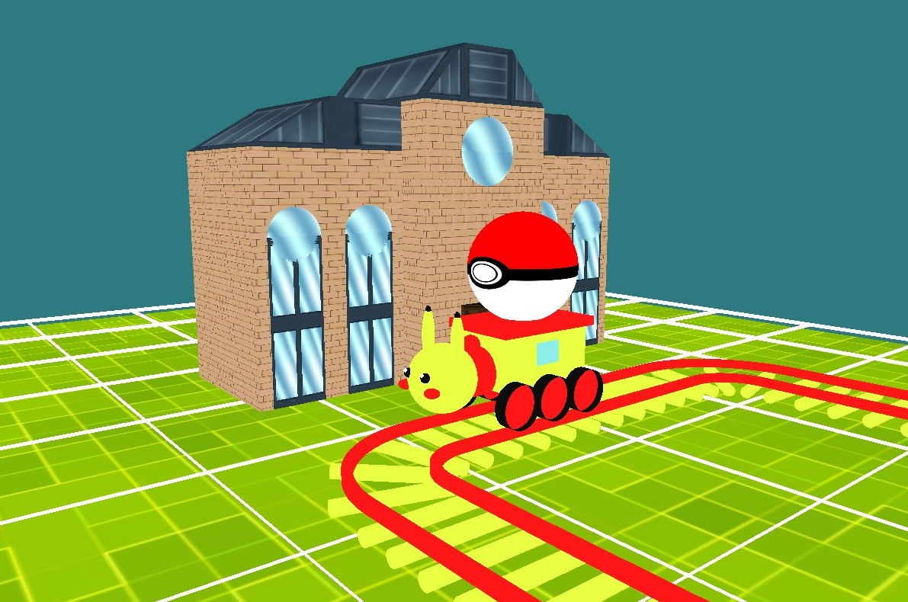

Projet E3 IMAC
PikaStar


Terminé
Langue :

Énoncé reçu le :
07/05/2026
Date de rendu :
08/06/2026
Technologies
C++
OpenGL
Shaders (GLSL)
JSON (nlohmann)
Equipe
Matthieu FARANDJIS
Julien LEEDER
Plus sur le projet
Présentation
Ce projet dans le cadre du cours de Synthèse d'Images en E3 IMAC à l'ESIEE Paris. Le but initial du sujet, intitulé "A Railroad and a train", était de concevoir une petite simulation ferroviaire en C++ avec OpenGL.
Pour nous approprier le projet, nous avons décidé de partir sur le thème de Pokémon. Les rails et le train sont assortis à Pikachu, et notre gare est la reproduction de la gare de la ville d'Illumis des jeux Pokémon XY et Pokémon ZA.
PikaStar qui est la fusion du pokémon Pikachu et du train Eurostar.
Spécifications et Contraintes du Sujet
Le cahier des charges de cette application 3D imposait plusieurs contraintes techniques rigoureuses :
Génération procédurale :
Le circuit doit être généré automatiquement à partir d'un fichier de configuration JSON lu grâce à la bibliothèque nlohmann.Environnement :
La scène repose sur un terrain plat modélisé sous forme de grille de taille minimale 10x10, représentant un espace d'au moins 100x100.Modélisation stricte :
Seuls deux types de rails devaient être modélisés : un rail droit composé de 5 ballasts et 2 rails, ainsi qu'un rail courbe de **90°** comprenant 2 rails courbés et 3 ballasts.Éléments additionnels :
L'application devait inclure la modélisation d'une gare et d'un train posé sur les rails.Éclairage :
Le projet requiert deux modes d'illumination : un mode "flat" par défaut, et un mode "réaliste" intégrant une lumière directionnelle (soleil) et une source ponctuelle positionnée à l'avant du train.Textures :
Au minimum un élément graphique de la scène devait être texturé.
Détails techniques et Commandes
Contrairement aux travaux dirigés classiques, ce projet nécessitait l'implémentation d'une caméra de type FPS permettant à l'utilisateur de se déplacer librement et de regarder à **360°** dans le plan (x, y). Le programme a été développé sous Windows 11 et Ubuntu 24.04.4 LTS.
Voici quelques commandes pour interagir avec la scène :
Touches ZQSD : Permet de faire bouger la caméra (haut, gauche, bas, droite) en vue FPS.
Touche C : Permet de désactiver la caméra et de faire balader la souris dans la fenêtre.
Touche L / P : Affiche le mode maillage des objets (L) ou repasse les objets en forme pleine (P).
Touches K : Activer ou non les lumières (bascule entre flat shading et phong shading).
Touche T : Nous permet d'avoir un top shot de la scène (positionnement en vue du dessus).
Fonctionnalité : Construction du circuit (determinerMarcheASuivre)
L'une des fonctionnalités phares que j'ai développées (Matthieu) est la fonction determinerMarcheASuivre, située dans le fichier deserialisation.cpp.
L'objectif était de construire le circuit ferroviaire à partir du fichier circuit.json, en interprétant les coordonnées pour placer les rails en 3D.
Inspiré par Scratch, j'ai voulu créer une logique simple basée sur des commandes comme "avancer", "tourner à gauche" ou "tourner à droite".
Pour cela, l'algorithme compare la position du rail précédent et du rail suivant :
Si la distance sur l'un des deux axes entre le rail précédent et le rail suivant est de 2, il s'agit d'un rail droit.
Sinon, le rail est courbé. L'algorithme détermine s'il tourne à gauche ou à droite en comparant les coordonnées X et Y.
Le principal défi était le changement de repère à chaque fois que le train tourne. Pour résoudre ce problème dans toutes les directions, j'ai conçu deux listes de repères et utilisé une opération modulo afin d'éviter les erreurs de type "out of range".
Modifications du code de base
Pour accomplir ce projet, nous avons dû modifier le code initialement fourni par notre professeur :
Dans
Projet/deserialisation.h: Ajout devector<Direction> marcheASuivreCircuit, de l'énumérationDirection, et de la structurePositionBis.Dans
basic_mesh.hpp: Ajout de la fonctionbasicCubeMaisPourLaMosaiquepour pouvoir répéter les textures, et debasicTrianglepour générer des triangles en 3D.Nous avons également implémenté une fonction C++ capable de compléter automatiquement une case manquante dans le fichier JSON du circuit.
J'ai utilisé Gemini pour créer la page web à partir du rapport, de l'énoncé, et d'un template de mon site web, j'ai ensuite relu la page.